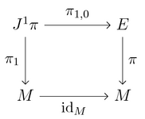

A jet bundle and its target projection.

A continuous tangent vector field on the sphere with only one pole.
Talks
These are the talks that I have given in different seminars, workshop, schools...
You can find the Slides of most talks by pressing the icon

and, in some cases, you can find a recording by pressing

.
 Curriculum Vitae
Curriculum Vitae